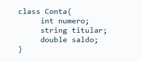
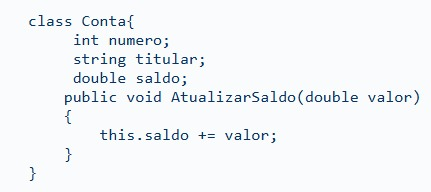
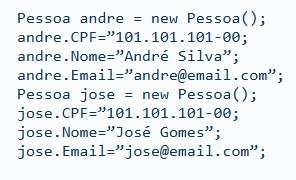
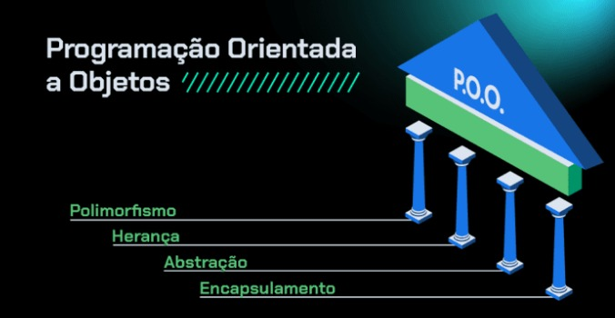
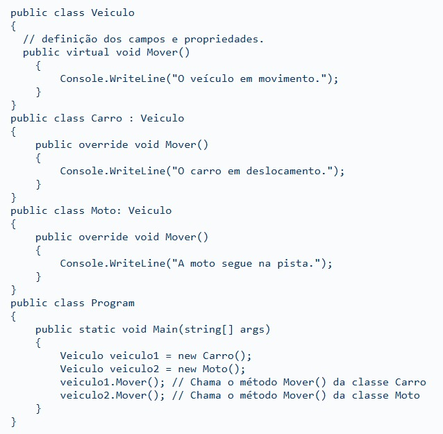
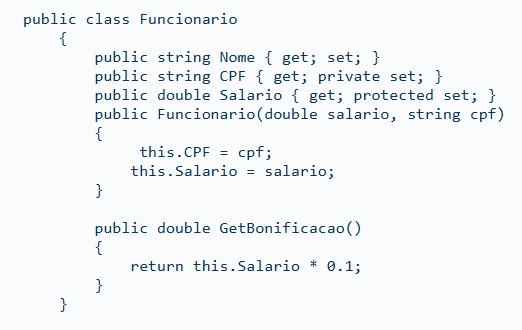
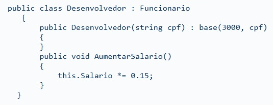
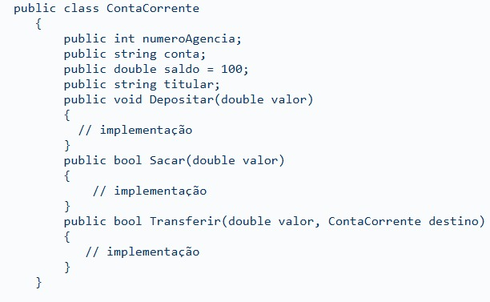
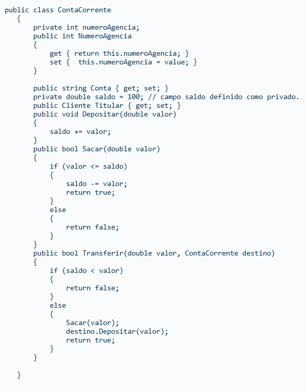

O que é C#?
A C# (lê-se “C sharp”) é a principal linguagem de programação em .NET. Inclusive, ela surgiu com a primeira versão da plataforma, em 2002.
Com C# é possível desenvolver aplicações de praticamente todos os tipos: desde aplicações embarcadas até aplicativos de área de trabalho, mobile e sistemas web.
Como é orientada a objetos, é possível criar classes e estruturas de programação que são reaproveitadas por diversas aplicações.
Além do mais, tem uma sintaxe simples, o que facilita a aprendizagem. Isso se consolidou porque, em seu processo de desenvolvimento, foram adotadas facilidades das linguagens C e C++, além de outros recursos mais avançados provenientes das linguagens (como Java).
As principais características do C# são:
Suporte à orientação a objetos: por implementar o paradigma da orientação a objetos, o C# permite a criação de classes, objetos e interfaces, além da aplicação de conceitos como herança, polimorfismo e encapsulamento.
Segurança de tipos: a linguagem C# é fortemente tipada. Então, antes de declarar uma variável, é necessário declarar o seu tipo. Depois disso, no decorrer da execução, a variável não pode assumir outro tipo.
Garbage collector: é a ferramenta que se encarrega de descartar da memória, de forma automática, objetos que a aplicação não utilizar mais, Assim, quem desenvolve usando C#, não precisa se preocupar com o gerenciamento de memória.
Tratamento de exceções: proporciona a possibilidade de capturar e tratar uma série de exceções que podem ocorrer durante a execução da aplicação.
Interoperabilidade: dá a possibilidade de interagir com soluções criadas em outras linguagens como C++, por exemplo. Isso é feito por meio do recurso da CLR que permite o consumo das bibliotecas existentes.
C# e orientação a objetos
Desde o início, o C# já foi desenvolvido com suporte ao paradigma de programação da orientação a objetos — a famosa OO.
Esse paradigma (modelo de programação) permite criar softwares de maneira a aproximar conceitos do mundo real com o código.
É possível, por exemplo, traduzir para o código algumas ideias como “pessoa” ou “equipamento” usando esse paradigma.
Essas palavras vão representar objetos de software que se comunicarão e implementarão uma funcionalidade do sistema.
Esse estilo de programação não surgiu com o C# ou com o Java — que é uma das linguagens responsáveis pela popularização do paradigma.
Na verdade, a orientação a objetos nasceu lá nos anos de 1960, na Noruega, com o objetivo de criar sistemas mais confiáveis, flexíveis e de fácil manutenção.
Desde então, a orientação a objetos se consolidou no mercado de desenvolvimento.
Algumas das principais vantagens de desenvolver sob o guarda-chuva da OO são:
Curva de aprendizagem: a OO é uma forma de programar. Sendo assim, uma vez que uma pessoa conhece bem seus fundamentos, a linguagem é somente mais uma ferramenta.
Reutilização: esta é uma das principais forças na adoção da OO, já que é possível reaproveitar classes e tipos entre projetos diferentes. Assim, reduz o tempo de implementação e diminui os custos com a manutenção da aplicação.
Classes e objetos
Classes:
Uma forma fácil de entender esse conceito é a partir da analogia com carros. Vamos lá.
É possível classificar os carros, com base em algumas características comuns como, por exemplo, quantidade de portas, placa, modelo e daí por diante.
Assim como nos carros, na orientação a objetos, uma classe ajuda a identificar e *classificar vários objetos que compartilham características comuns.
Em uma definição mais formal, classe é um modelo, um tipo de planta que serve para criar objetos.
Em C#, uma classe pode ser apresentada da seguinte forma:

A partir disso, são definidos atributos e características observáveis dos objetos que são importantes para executar o sistema.
Um exemplo disso é a classe “conta”, na qual, após um processo de análise, abstraiu o número, o titular e o saldo como atributos importantes.
Mas a classe não define apenas atributos. Ela também pode estabelecer os comportamentos que um objeto tem.
Sendo assim, em resumo, a classe define os atributos e os métodos que os objetos de uma classe terão, como nesse exemplo:

Enfim, as classes são o pontapé inicial para programar de forma orientada a objetos. Tanto é que existe quem defenda a mudança para “programação orientada a classes”.
Objetos:
Os membros que estão sob a classificação de uma classe são os objetos. Em geral, eles representam um elemento específico de um universo maior.
Se você prestar atenção ao seu redor, muito do que você vê são objetos, não é? Livros, televisão, computador e daí por diante.
Para criar um objeto em C# usamos a palavra reservada new, assim como em outras linguagens.
Aqui está um exemplo da criação de objetos:
Como você já sabe, a classe define os atributos comuns aos seus objetos. Esses atributos são, portanto, as características de um objeto. O valor de cada característica é que vai nos ajudar a diferenciar um objeto do outro.
Por exemplo, temos dois objetos do tipo “pessoa” e cada propriedade vai conter um conjunto de valores que vai nos permitir distinguir um do outro.

Outros conceitos da OO
Ao falar sobre OOs, alguns conceitos são centrais e dão sustentação para esse paradigma. É o que se denomina de pilares da Orientação a Objetos.
Os principais pilares são:

Polimorfismo
Como o próprio nome sugere, o polimorfismo significa “várias formas”. Na O.O. o polimorfismo compreende a capacidade de um objeto de se comportar de maneira distinta ao receber uma mensagem. Como, por exemplo:

Na classe Veiculo temos um método Mover() que é polimórfico. Nele cada subclasse tem uma implementação particular.
No método Main, em tempo de execução, o programa vai chamar o método do tipo concreto da variável.
Afinal, de acordo com sua subclasse, o veículo se movimenta de maneira diferente. Esta é somente uma das formas de implementar o polimorfismo.
Herança
A herança permite criar novas classes a partir de outras que já existem e, a partir disso, aproveitar as definições dos atributos e métodos de uma classe em outra.
Este é um mecanismo fundamental dentro da O.O., porque, a partir dele, é possível reaproveitar código.
Observe a definição da classe Funcionario.

No próximo trecho de código vemos a definição de uma herança em C#, com o uso do operador :.

A classe Desenvolvedor está herdando os atributos e os métodos da classe Funcionario pelo mecanismo da herança.
A partir de agora as propriedades Nome, CPF e Salario, bem como o método GetBonificacao também existem na definição da classe Desenvolvedor.
Abstração
A abstração é uma chave para entender a OO. Acima de tudo, a abstração é um processo mental, no qual é possível extrair significados de uma situação ou problema com base em nossas experiências.
Um ponto de abstração é conseguir isolar o que é importante representar num sistema.
Imagine uma pessoa responsável por desenvolver um sistema de gestão em empresas de mármore e granito. Para entender o problema, talvez seja necessário definir entidades como bloco ou chapa, para estabelecer itens relevantes para a aplicação.
Esse é o processo de abstração. Em seu livro Design Patterns com C# , Rodrigo Gonçalves Santana apresenta uma definição interessante sobre isso:
“A abstração é o desafio de identificar características de algo do mundo real e transformá-las em uma classe. ” (SANTANA, 2020, p.5 )
Encapsulamento
No universo da O.O, o encapsulamento é uma habilidade do objeto de esconder seus dados ou comportamentos do mundo “exterior”.
O principal objetivo é implementar maior segurança ao código. Para isso, o encapsulamento oculta uma parte do código para que alterações em um objeto não afetem outras partes e interações do sistema.
Vamos pensar, por exemplo, na seguinte situação: o saldo de uma conta bancária. Não existe dúvida de que não se deve alterá-lo ou manipulá-lo de forma direta.
Apenas através de métodos ou propriedades, que permitem o lançamento de créditos e débitos. Olhe o exemplo:

Na definição da classe ContaCorrente temos os campos numeroAgencia, conta e saldo que já tem 100 como valor default.
Todos estão com a visibilidade public, o que fere o princípio de encapsulamento. Afinal de contas, após a criação de um objeto do tipo ContaCorrente, existe a possibilidade de alterar o valor do campo saldo.
Os recursos de visibilidade podem solucionar esse problema. É só tornar o campo como “private” (visível apenas dentro da classe) ou “protected” (visível somente no assembly).
Para acessar, usamos métodos ou propriedades públicas. Dessa forma:

Com a implementação de um nível de encapsulamento, existe maior segurança ao manipular o campo saldo. Nesse caso, existe uma campo privado com acesso através de métodos públicos.
Ferramentas para desenvolver com C Sharp
Você pode começar a desenvolver em C# com um editor de texto. Pode ser até o bloco de notas do Windows. O que não pode faltar é a instalação do .NET no seu ambiente — seja ele Windows ou Linux.
Mas, programar no bloco de notas só se for estritamente necessário, ok? 🥲
Hoje em dia, existem diversas ferramentas — entre pagas e gratuitas, para atender às necessidades.Com estas ferramentas podemos editar nossos códigos, executar depurações, acessar ambientes CLI (command line interface), executar scripts, acessar e manipular base de dados, além de compilar nossa solução.
Tudo isso em um único ambiente que aumenta, de maneira exponencial, nossa produtividade no momento de criar nossas aplicações.
Ferramentas
Visual Studio: O Visual Studio é uma IDE (ambiente integrado de desenvolvimento) criada pela Microsoft com atenção especial a plataforma .NET.
De forma geral, ele serve para desenvolver soluções de aplicativos, programas e websites, o que possibilita usar C#, Visual Basic .NET, C++, F#, Python, Javascript e muitas outras.
VS Code: O Visual Studio Code é o editor de códigos abertos da Microsoft, disponível no Windows, Linux e Mac.
Por se tratar de um super editor de código, você precisa instalar algumas extensões para C#.
De forma geral, ele possui suporte para várias linguagens, uma interface agradável e é simples de usar, além de ser uma ferramenta muito leve em comparação a uma IDE tradicional.
Rider: No universo das IDEs para trabalhar com C#, existe também o Rider, um produto proprietário da JetBrains.
As principais características dessa ferramenta são:
É cross-plataform;
Toma como base as ferramentas IntelliJ e o ReSharp, plugin que adiciona recursos avançados ao Visual Studio.
Como aprender sobre C# e .NET de forma gratuita
Você pode acessar as primeiras aulas da Formação C# e orientação a objetos, da Escola de Programação da Alura e continuar aprendendo sobre temas como:
1. C#: criando sua primeira aplicação
2. C#: aplicando a Orientação a Objetos
3. C#: dominando Orientação a Objetos
4. C#: consumindo API, gravando arquivos e utilizando o LINQ
Como aprender melhor? Com Diogo Pires | #HipstersPontoTube
Conclusão
Neste resumo, entendemos o que é o C#, vimos que o C# é uma linguagem orientada a objetos, o principal paradigma do mercado. Não deixamos de comentar também sobre as ferramentas que podem dar suporte no trabalho com a linguagem, como o.NET.
O C# é uma linguagem que está em alta no mercado, em constante evolução com a adição de novos recursos por parte da Microsoft. Não é à toa que, há alguns anos, consolidou-se como umas das principais linguagens de propósito geral.